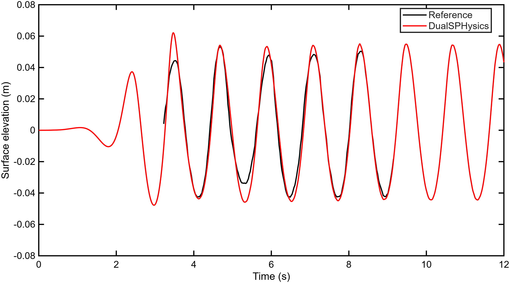

Drifting Box¶
Under review by Bonaventura Tagliafierro
This benchmark considers regular-wave propagation and the resulting drift and oscillation of a freely floating rectangular box. It is based on Ren et al. (2015). Two complementary two-dimensional configurations separate the incident wave field from the body's surge, heave and pitch response.
The files are supplied at DualSPHysics_v6.0/examples/benchmarks/06_DriftingBox. The wave-only case measures free-surface elevation at the intended box location; the body-present case provides the motion comparison. Both currently select wave height 0.10 m and period 1.20 s.
UNDER REVIEW
This walkthrough is preliminary and awaits Bona's review. The XML configuration and validation results are still under review. Preliminary numerical/reference comparison figures are supplied below; physical validation and quantitative agreement remain pending.
What's Covered in This Tutorial
- Shared wave-tank geometry and second-order piston generation
- Wave-only and floating-body configurations with separate outputs
- Free-slip mDBC, laminar viscosity and advanced shifting
- Wave-gauge and floating-body motion extraction
- Experimental elevation, surge, heave and pitch comparisons
Video pending – Drifting Box benchmark simulation.
All XML and BAT blocks below are contiguous excerpts copied directly from the named current source files, with their original indentation, whitespace, expressions, attributes and comments. Separate excerpts do not form a complete runnable input. Only the settings relevant to this walkthrough are shown.
Case Configuration¶
Two Complementary Setups¶
| Aspect | Wave propagation | Floating-body motion |
|---|---|---|
| XML | WavePropagation_Def.xml |
DriftingBox_Def.xml |
| Windows GPU BAT | wWavePropagation_win64_GPU.bat |
wDriftingBox_win64_GPU.bat |
| Output root | WavePropagation_out/ |
DriftingBox_out/ |
| Floating body | None | Rectangular box, local mkbound=50 |
| Primary comparison | Elevation at X=2.0 m | Surge, heave and pitch |
| Gauges | WG_Box, WG_Up, WG_Down |
WG_Up, WG_Down |
Both XMLs have identical execution/parameters blocks and share the constants, piston settings and damping limits. The body geometry, floating declaration and central wave gauge distinguish the configurations. There is no Chrono or MoorDynPlus coupling in either file.
Source Files and Reference Data¶
The folder contains the two case XMLs, their Windows GPU BATs, a Windows shortcut and reference/Ren2015_Fig11_Experimental_H0.10.csv. Numerical output directories and preliminary comparison PNGs are available. The selected experimental file corresponds to the configured 0.10 m wave height; final coordinate, datum and angular-sign verification remains pending.
Geometry Definition¶
Shared Tank, Coordinates and Resolution¶
The model uses the XZ plane, with wave propagation in positive X, Z upwards, Y transverse and still water at Z=0. PminY=PmaxY=0 generates a 2-D section. The nominal tank extends from X=0 to 10 m, with floor Z=−0.40 m and top Z=0.40 m. The piston face rests at X=0.20 m; the intended box centre is X=2.0 m. The nominal particle spacing is 0.005 m.
These shared definitions are from the wave-only XML:
<newvarcte depth="0.40" _rem="Water depth (SWL at z=0)" />
<newvarcte waveH="0.10" _rem="Wave height: 0.04 or 0.10" />
<newvarcte wavePeriod="1.20" _rem="Wave period" />
<newvarcte timeMax="10*wavePeriod" />
<newvarcte timeOut="wavePeriod/20" />
<newvarcte DefTankpx="0" DefTanksx="10.0" _rem="Tank length (Fig. 9)" />
<newvarcte DefTankpz="-depth" DefTanksz="2*depth" _rem="Wall height (2*depth, as Fig. 3)" />
<newvarcte DefPistonX="0.20" _rem="Piston face at rest (paper: x=0.2 m)" />
<newvarcte DampingX1="4.0" DampingX2="DefTankpx+DefTanksx" _rem="Sponge layer, last 3 m (Fig. 9)" />
<newvarcte BoxX="2.0" _rem="Box centroid x (section 5); wave gauge at this position" />
<newvarcte DummyWidthY="1.0" _rem="2D case: only y=0 is generated" />
The particle coordinates use the source's roundpos expressions and half-spacing offsets. DummyWidthY=1.0 supports the geometry construction; it does not make this a three-dimensional tank. The tank draws its right wall and bottom; the moving piston closes the upstream side. The boundary-particle tank layers are 0*,1,2,3,4, and the piston is generated as a solid block with six X columns.
Floating Box¶
Only DriftingBox_Def.xml defines and draws the box. Its nominal dimensions are 0.30 m along X and 0.20 m along Z, centred initially at (X,Z)=(2.0,0). Its nominal bottom and top are −0.10 and +0.10 m, giving half immersion at the still-water surface. Relative weight 0.50 against the specified water density 1000 kg/m³ corresponds to nominal body density 500 kg/m³.
<newvarcte BoxX="2.0" _rem="Box centroid x (section 5)" />
<newvarcte BoxZ="0" _rem="Box centroid z (half immersed)" />
<newvarcte DefBoxsx="0.30" DefBoxsz="0.20" />
<newvarcte DefBoxpx="BoxX-DefBoxsx/2" DefBoxpz="BoxZ-DefBoxsz/2" />
<newvarcte BoxRelW="0.50" _rem="Average density 500 kg/m^3" />
<newvarcte DummyWidthY="1.0" _rem="2D case: only y=0 is generated" />
<floatings>
<floating mkbound="50" relativeweight="#BoxRelW" />
</floatings>
The box is assigned local mkbound=50 and generated with setfrdrawmode auto="true". Its boundary-normal surfaces and solid floating particles are constructed separately; the particle draw uses layers 0,-1,-2,-3,-4. The XML supplies relative weight rather than an explicit mass, centre of mass or inertia tensor. These generated body properties must therefore be checked in the case information before interpreting a motion result.
The intended in-plane degrees of freedom are surge (X displacement), heave (Z displacement) and pitch (rotation about Y). There are no explicit translation/rotation restrictions in the floating declaration. RigidAlgorithm=SPH is selected and FtPause=0.0 specifies no initial freezing interval. Do not describe the in-plane rotation as roll or infer the generated global MK from the local boundary label alone.
Boundary Normals¶
Both cases create a GeometryForNormals list and export the tank and piston surfaces; the body-present case also includes the box surfaces. After the shape export, drawing is reset before particle generation. The common normal input is:
<normals>
<distanceh value="2.0" comment="Maximum distance (H*distanceh) to compute normals data (default=2)" />
<geometryfile file="[CaseName]_hdp_Actual.vtk" comment="File with boundary geometry (VTK format). Use NONE to ignore it." />
</normals>
The active settings are Boundary=mDBC, SlipMode=FS and NoPenetration=N. Free-slip mDBC applies with the supplied geometry normals; the additional no-penetration option is not enabled. See the mDBC XML Guide for the general method and normal-generation workflow.
Wave Generation and Absorption¶
Second-order Piston¶
Both files attach motion reference 10 to a null base motion and use the wave-paddle controller to drive that piston along positive X. They select second-order waves, H=0.10 m, T=1.20 s, depth 0.40 m, zero phase and a one-period ramp. Start time is zero and duration zero extends generation to the simulation end.
The following contiguous excerpt shows the active generation settings in WavePropagation_Def.xml; the same settings occur in DriftingBox_Def.xml:
<mkbound value="10" comment="Mk-Bound of selected particles" />
<waveorder value="2" comment="Order wave generation 1:1st order, 2:2nd order (def=1)" />
<start value="0" comment="Start time (def=0)" />
<duration value="0" comment="Movement duration, Zero is the end of simulation (def=0)" />
<depth value="#depth" comment="Fluid depth (def=0)" />
<pistondir x="1" y="0" z="0" comment="Movement direction (def=(1,0,0))" />
<waveheight value="#waveH" comment="Wave height" />
<waveperiod value="#wavePeriod" comment="Wave period" />
<phase value="0" comment="Initial wave phase in function of PI (def=0)" />
<ramp value="1" comment="Periods of ramp (def=0)" />
<savemotion periods="30" periodsteps="20" xpos="#BoxX-DefPistonX" zpos="#-depth/2" comment="Saves motion data. xpos and zpos are optional. zpos=-depth of the measuring point" />
savemotion requests 30 periods with 20 steps per period, at relative X=BoxX-DefPistonX=1.80 m and Z=−0.20 m. That diagnostic request is distinct from the 12 s simulation duration and from the numerical free-surface gauges. The following awas_zsurf block has active="0" in both XMLs: active wave absorption is disabled. Its settings are not used to describe an operating absorption controller here.
Passive Damping¶
Passive damping remains configured in both cases:
<damping>
<dampingzone>
<limitmin x="#DampingX1" y="0" z="0" comment="minimum reduction is applied" />
<limitmax x="#DampingX2" y="0" z="0" comment="maximum reduction is applied" />
<overlimit value="0" />
<redumax value="6" comment="Maximum reduction in location limitmax (default=10)" />
</dampingzone>
</damping>
The actual limits evaluate to X=4.0 and 10.0 m, giving a 6.0 m damping zone, with redumax=6 and overlimit=0. These values govern the configuration; the predefinition comment saying “last 3 m” does not match the selected limits. The damping region lies downstream of the initial box position.
Numerical Gauges¶
Both cases compute and save gauge measurements every 0.01 s and disable per-PART gauge VTK output. This is independent of the regular PART interval of 0.06 s.
| Gauge | X (m) | Present in | Purpose |
|---|---|---|---|
WG_Box |
2.0 | Wave-only | Incident elevation at the intended box centre |
WG_Up |
1.0 | Both | Upstream elevation |
WG_Down |
4.0 | Both | Downstream elevation, at the damping-zone entrance |
All gauge lines use Y=0 and run vertically from −4H to +4H (−0.40 to +0.40 m for the selected height), with pointdp coefdp=0.05. The central wave-only gauge is:
<swl name="WG_Box">
<pointdp coefdp="0.05" comment="Distance between check points (value=coefdp*dp)" />
<point0 x="#BoxX" y="0" z="#-4*waveH" comment="Initial point" units_comment="m" />
<point2 x="#BoxX" y="0" z="#4*waveH" comment="Final point" units_comment="m" />
</swl>
The wave-only central gauge writes WavePropagation_out/GaugesSWL_WG_Box.csv. Use its actual time and vertical-position headers. There is no WG_Box gauge in the body-present XML; the central incident-wave comparison belongs to the wave-only case.
Numerical Parameters¶
The two parameter blocks are identical. The active selections relevant to these comparisons are:
| Setting | Current selection |
|---|---|
| Time integration / kernel | Symplectic (SYM) / Wendland C2 (WC2) |
| Viscosity / turbulence | Laminar (LAM), Visco=1e-6 m²/s, boundary factor 1 / Turbulence=NO |
| Density diffusion | Fourtakas (FO), coefficient 0.10 |
| Shifting | Full advanced, mode 4; ShiftCoef=-0.3, ShiftTFS=1.5, ShiftAdvCoef=-0.01 |
| Advanced-shifting formulation | ShiftAdvALE=N, ShiftAdvNCPress=Y |
| Divergence cleaning | DivCleanKp=0, disabled |
| Floating-body interaction | RigidAlgorithm=SPH, no initial pause |
| Smoothing / stability | coefh=1.3, CFL=0.2; automatic sound-speed selection with coefsound=20 |
| Time-step controls | CoefDtMin=0.001, DtIni=0, DtMin=0, DtFixed=0, DtAllParticles=N |
| Simulation / regular output | TimeMax=10*wavePeriod=12 s / TimeOut=wavePeriod/20=0.06 s |
| Density exclusion | 700–1300 kg/m³, excluded-particle warning enabled |
| Position storage / domain | Double precision; default particle-derived domain with +10% upper-Z extension |
These are the configured settings, not evidence of convergence or agreement. General option explanations are in XML Configuration and the Advanced Shifting XML Guide.
Running the Simulation¶
Windows GPU¶
Use the BAT corresponding to the configuration, from the benchmark directory. The wave-only naming block is:
set name=WavePropagation
set dirout=%name%_out
set diroutdata=%dirout%\data
The body-present naming block is:
rem Defines the case name and output directories.
set name=DriftingBox
set dirout=%name%_out
set diroutdata=%dirout%\data
Both scripts resolve executables under ../../../bin/windows. They define CPU and GPU solver paths but invoke the GPU solver. The shared execution sequence below is copied from the body-present BAT:
rem Executes GenCase to create initial files for simulation.
%gencase% %name%_Def %dirout%/%name% -save:all
if not "%ERRORLEVEL%" == "0" goto fail
rem Executes DualSPHysics to run the SPH simulation.
%dualsphysicsgpu% -gpu %dirout%/%name% %dirout%
if not "%ERRORLEVEL%" == "0" goto fail
Existing output folders
The BAT menu can delete the selected case's existing output and run again, run post-processing only, or abort. Preserve any results needed for comparison before selecting deletion. A successful generation or solver run has not been verified for this draft.
Post-processing and Output Paths¶
The body-present post-processing sequence is:
:postprocessing
rem Executes PartVTK to create VTK files with fluid particles.
set dirout2=%dirout%\particles
%partvtk% -dirdata %diroutdata% -savevtk %dirout2%/PartFluid -onlytype:-all,+fluid -continue:1
if not "%ERRORLEVEL%" == "0" goto fail
rem Executes PartVTK to create VTK files with piston particles.
%partvtk% -dirdata %diroutdata% -savevtk %dirout2%/PartPiston -onlytype:-all,+moving -continue:1
if not "%ERRORLEVEL%" == "0" goto fail
rem Executes PartVTK to create VTK files with floating particles.
%partvtk% -dirdata %diroutdata% -savevtk %dirout2%/PartFloating -onlytype:-all,+floating -continue:1
if not "%ERRORLEVEL%" == "0" goto fail
rem Executes PartVTKOut to create VTK files with excluded particles.
%partvtkout% -dirdata %diroutdata% -savevtk %dirout2%/PartFluidOut -SaveResume %dirout2%/_ResumeFluidOut
if not "%ERRORLEVEL%" == "0" goto fail
rem Executes BoundaryVTK to create VTK files with floating-body geometry.
set dirout2=%dirout%\boundary
%boundaryvtk% -loadvtk AutoActual -motiondata %diroutdata% -savevtkdata %dirout2%/Box -onlytype:floating
if not "%ERRORLEVEL%" == "0" goto fail
rem Executes FloatingInfo to export the selected floating-body data to CSV files.
set dirout2=%dirout%\floatinginfo
%floatinginfo% -dirdata %diroutdata% -savemotion -onlymk:60 -savedata %dirout2%/FloatMotion
if not "%ERRORLEVEL%" == "0" goto fail
PartVTK exports fluid, moving-piston and floating particles under particles/, with separate PartFluid, PartPiston and PartFloating prefixes. PartVTKOut exports excluded particles and their summary. BoundaryVTK selects floating geometry for boundary/Box. FloatingInfo selects MK 60, requests motion data with -savemotion, reads -dirdata and writes floatinginfo/FloatMotion. Every active tool call is followed by the BAT return-code check.
The wave-only BAT exports fluid and moving-piston particles plus excluded-particle data. It does not invoke MeasureTool, BoundaryVTK or FloatingInfo. Its elevation comparison uses the XML runtime WG_Box gauge; body-motion extraction belongs to the body-present BAT. Surface extraction is commented out.
| Configuration | Expected output paths |
|---|---|
| Wave propagation | WavePropagation_out/data/, GaugesSWL_WG_Box.csv, GaugesSWL_WG_Up.csv, GaugesSWL_WG_Down.csv; fluid VTK under particles/ |
| Drifting box | DriftingBox_out/data/; GaugesSWL_WG_Up.csv, GaugesSWL_WG_Down.csv; fluid VTK under particles/, body VTK under boundary/, floating CSV under floatinginfo/ |
The current FloatingInfo command selects MK 60 and writes the prefix DriftingBox_out/floatinginfo/FloatMotion. Check generated marker metadata and output headers before identifying the box motion. See Compute the motion of a floating body for general field interpretation.
Results and Validation¶
Experimental Reference and Coordinate Conventions¶
The selected experimental CSV provides time and response channels. Inspect its headers and valid time/quantity pairs before comparison; the original channel names alone do not define the numerical coordinate mapping.
| Comparison | Experimental columns | Numerical quantity | Convention to verify |
|---|---|---|---|
| Free-surface elevation | t_s, eta_m |
Central wave-only gauge elevation | X=2.0 m in the XML; confirm experimental probe location and vertical datum |
| Surge | t_s, sway_m (also x_over_d) |
X displacement (surge in metres) |
X origin, displacement reference and positive direction |
| Heave | t_s, heave_m (also z_over_d) |
Z displacement | Displacement datum and positive direction |
| Pitch | t_s, roll_deg or roll_rad (also theta_over_kd) |
Rotation about Y | Angular units, zero reference and positive sign |
For this XZ model, the comparison names are surge, heave and pitch, despite the experimental column labels sway_m and roll_*. The CSV files alone do not establish the original angular sign or the full experimental coordinate mapping. Do not invert a curve or equate a centre position with displacement without a documented reference.
The current H=0.10 m reference contains elevation, surge, heave and angular channels with their own valid samples. Missing entries are not zeros. Match valid time/quantity pairs and verify the displacement and angular conventions; do not invent observations to fill gaps.
Wave Propagation Validation¶
Compare the wave-only central gauge with the H=0.10 m experimental elevation series. Confirm that the experimental measurement represents the intended box position, and document the time origin and elevation datum before applying any alignment. Use the upstream and downstream gauges to examine propagation without substituting them for the central comparison.

Preliminary figure. The numerical results and their comparison with the reference data are pending final verification.
Floating-body Motion Validation¶
Use the body-present output and the corresponding experimental series. Check generated body properties, selected MK, displacement references and Y-axis angular sign before overlaying the curves. Use displacement in metres and pitch in degrees, with any conversion stated explicitly.

Preliminary figure. The numerical results and their comparison with the reference data are pending final verification.
The generated XMLs record the selected 0.005 m spacing, free-slip mDBC and 12 s duration. This agreement of inspected settings does not prove the provenance of the plotted curves. Experimental time alignment, displacement datum and angular sign still require final verification. No earlier Floating Box figure is attributed to this case.
References¶
Ren, B., He, M., Dong, P. and Wen, H. (2015). Nonlinear simulations of wave-induced motions of a freely floating body using WCSPH method. Applied Ocean Research, 50, 1–12. DOI: 10.1016/j.apor.2014.12.003. Article.
Bibliographic details are verified against the University of Dundee publication record. A local full-text copy has not been identified; the experimental probe mapping and angular sign remain to be checked against the paper.